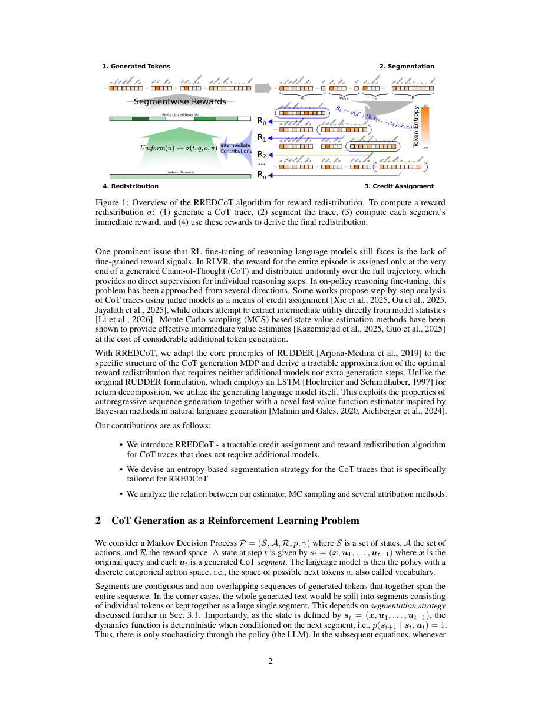

#1
★ 7/10
RREDCoT: Segment-Level Reward Redistribution for Reasoning Models
RREDCoT：面向推理模型的段级奖励再分配方法

图 Figure · Page 2 of paper
🎯 让AI在推理每一步都能获得有效反馈，训练更高效
RREDCoT redistributes training rewards across reasoning steps, making AI learn smarter without extra computation.
🗣️ 一句话比喻 · Plain-English Analogy就像一位篮球教练看比赛录像：不是赛后只说"我们赢了"或"我们输了"，而是把关键进攻和失误逐个标注出来，让球员知道哪些动作要强化、哪些要改正。RREDCoT对AI推理过程做的正是同一件事——精准标出哪些"思维动作"有效，让训练更有针对性。Think of it like a basketball coach reviewing game footage: instead of just saying "we won" or "we lost" at the end, the coach rewinds and marks exactly which plays were brilliant and which were mistakes — so players know precisely what to practice. RREDCoT does the same for AI reasoning steps, pinpointing the good moves so training is far more focused.
| 维度 | 中文 | English |
|---|---|---|
| ❓ 待解决 的问题 |
当我们训练AI一步步推理时（就像做数学题要写出解题过程），AI只有在最后才能得到"分数"，它不知道哪些推理步骤是有用的、哪些是在浪费时间。这就像学生只知道期末总分，却不知道每道题的对错。现有的训练方法在处理这个问题时噪声大、不稳定，尤其是推理链很长的时候。 | When we train AI models to reason step-by-step (like showing their work on a math problem), the AI only gets a "grade" at the very end — it doesn't know which thinking steps were helpful and which were wasteful. This is like a student getting a final exam score but never knowing which answers along the way were correct. Current training methods try to handle this but are noisy and unreliable, especially for long reasoning chains. |
| 💡 解决 的亮点 |
• RREDCoT不是在最后才给AI一个总分，而是识别出推理链中哪些片段真正关键，给这些步骤更高的奖励分数。 • 方法让模型"自己评价自己"，不需要额外生成样本，节省了大量计算资源。 • 有效降低了标准训练方法中"反馈噪声大"的问题，使训练过程更稳定、推理结果更准确。 | • Instead of giving the AI one big reward at the end, RREDCoT figures out which parts of the reasoning chain actually mattered and gives those steps higher credit — all without running extra computations. • The model uses itself as a judge to estimate how valuable each reasoning segment is, making the process efficient and self-contained. • This approach reduces the "noisy feedback" problem that plagues standard training methods, leading to more stable and accurate learning. |
| 🧪 实验 内容 |
研究者在数学推理基准测试集上评估了RREDCoT，这些数据集专门用来测试AI能否解决多步骤问题。他们将RREDCoT与流行的GRPO训练算法以及多种奖励归因方法（包括蒙特卡洛采样）进行了比较。实验还考察了不同的推理链分割方式（如按句子、按逻辑步骤）和不同的片段价值估计方式，以分析哪些设计选择最为关键。 | The researchers tested RREDCoT on math reasoning benchmarks — standard test suites used to evaluate whether AI can solve multi-step problems. They compared it against the popular GRPO training algorithm and several other reward attribution methods including Monte Carlo sampling. The experiments varied how the reasoning chain is segmented (e.g., by sentence, by logical step) and how the model estimates segment value, to understand what design choices matter most. |
| 📊 实验 结果 |
在数学推理基准测试中，RREDCoT超越了GRPO基线和基于蒙特卡洛采样的奖励再分配方法。在不引入额外生成开销的前提下，模型在多步骤推理任务上取得了更高的准确率，兼顾了性能提升和计算效率。不同分割粒度下的实验结果表明，段级奖励分配始终优于词级或整体序列级的奖励分配方式。 | RREDCoT outperformed the GRPO baseline and Monte Carlo-based reward redistribution methods on math reasoning benchmarks. The method achieved improved accuracy on multi-step reasoning tasks while requiring no additional generation overhead, demonstrating both better performance and greater efficiency. Specific gains varied by segmentation granularity, with segment-level redistribution consistently outperforming token-level or whole-sequence-level reward assignment. |
| 🏁 结论 | RREDCoT证明了：让推理模型自己为各推理步骤重新分配训练奖励，比仅在最终结果给出单一奖励更能带来稳定、高效的学习效果。这为训练前沿AI推理模型提供了一种实用且低成本的改进方案。 | RREDCoT proves that letting a reasoning model redistribute its own training rewards — by identifying which thinking steps mattered most — leads to better and more stable learning than giving a single reward at the end. This offers a practical, low-cost improvement to how we train state-of-the-art AI reasoning models. |
| 🔗 论文 链接 |
arXiv: 2606.06475v1 · 📥 PDF | |
⚙️ Method · 方法详解
RREDCoT把AI的推理过程切分成若干片段（类似"思维段落"），然后让模型自己估计每个片段对最终正确答案的贡献有多大。根据这些估计，重新分配奖励分数——对有用的片段加分，对无用的片段减分。关键在于，这个过程不需要额外生成任何新的回答，计算成本很低。相比之下，传统的蒙特卡洛采样法需要反复生成大量额外样本才能估计每步的价值，代价高昂。
RREDCoT works by splitting the AI's reasoning chain into segments (like paragraphs of thinking), and then asking the model itself to estimate how much each segment contributed to the final correct answer. It uses these estimates to redistribute the reward — bumping up the score for helpful segments and lowering it for unhelpful ones. Crucially, it does this without generating any extra responses, so it's computationally cheap. This is in contrast to Monte Carlo sampling, which would require generating many extra completions to estimate the value of each step.
🌟 Why It Matters · 为什么重要
随着ChatGPT等"推理型"AI在科学、教育和软件开发中扮演越来越重要的角色，如何高效、准确地训练这些模型至关重要。RREDCoT让训练过程更聪明、更省钱，有望加速更强推理AI的研发与落地。
As AI systems like ChatGPT and other "reasoning" models become central to science, education, and software development, training them efficiently and accurately is critical. RREDCoT makes that training process smarter and cheaper, potentially accelerating how quickly better AI reasoners can be developed and deployed.